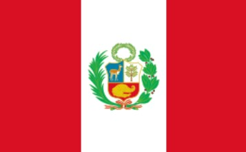

About Me
Hello partners, My name is Martin Pasco, and I'm from Perú, I was born in a city called Callao, but I'm living in Miami - Florida, I have been married for 9 years, We have a 1 dog Pinky name,It very playful, Pinky bring happines in our lifes, currently work at Acordis Corp like driver. Acordis is an It company like a driver and I hope get a certificacion for work in IT deparment, My hobies are Soccer, Running and Treking.
Provincia constitucional del Callao - Peru
_________________________________________

Callao is a port city located in the constitutional province of Callao, in the central-western part of Perú and in turn on the central coast of thePeruvian coast and in the western central area of South America.